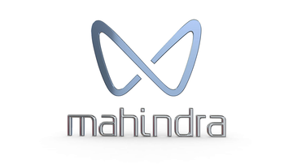
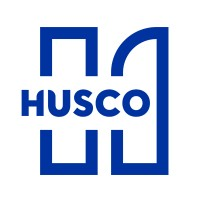
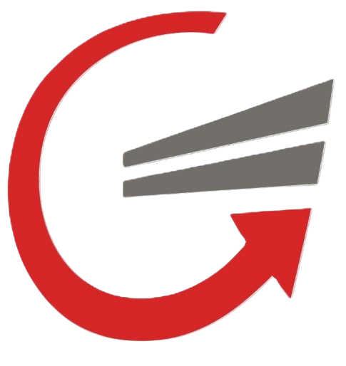
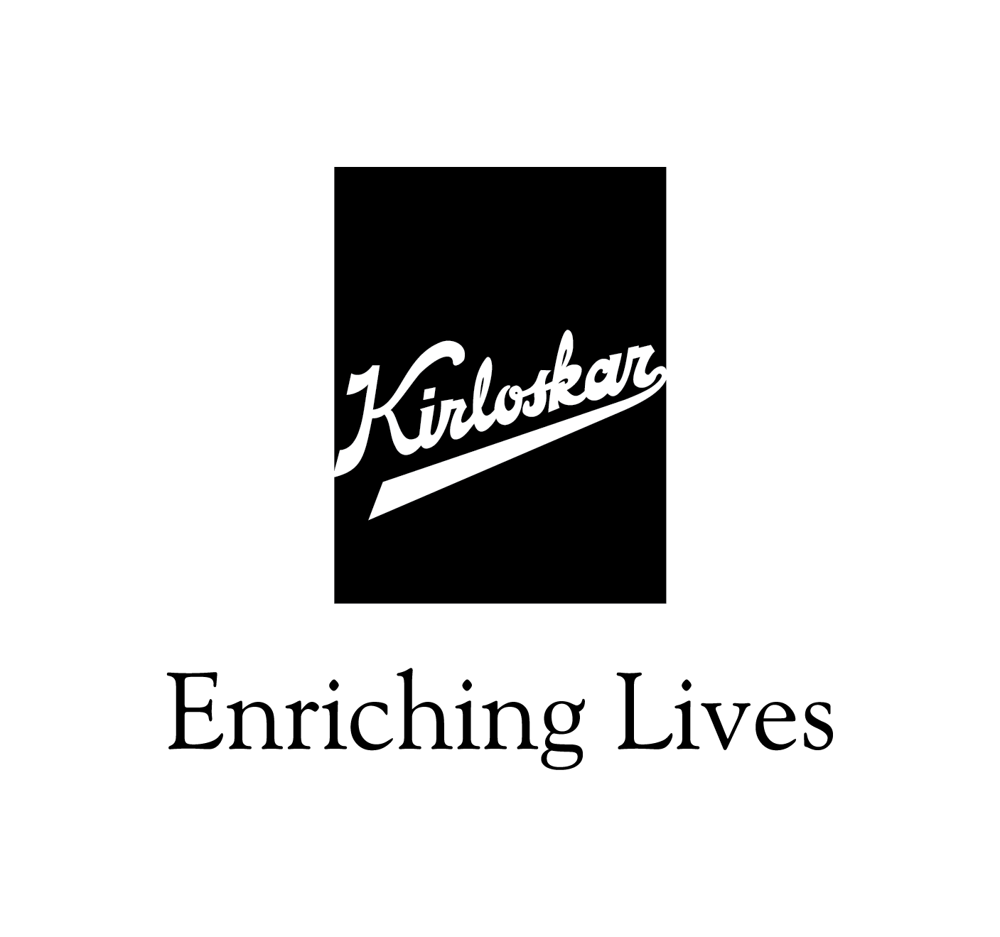
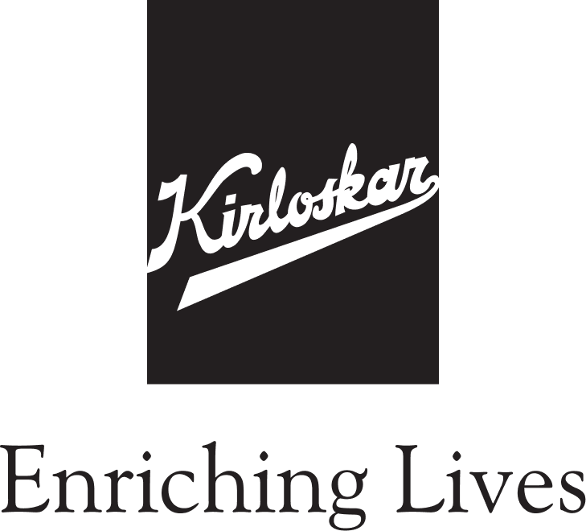
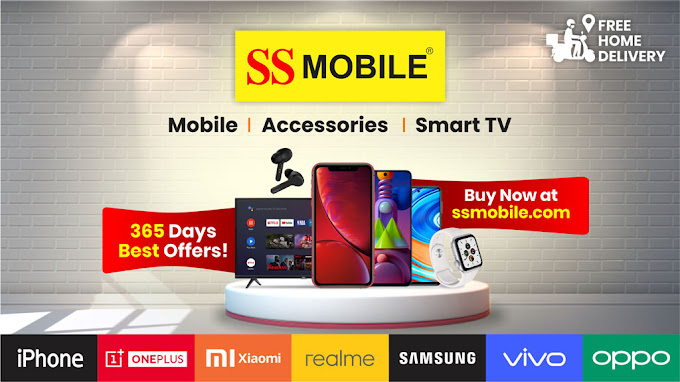

Frontend Engineering
Responsive interfaces, reusable components, Angular features and thoughtful user flows.
Angular · TypeScript · RxJSFULL STACK DEVELOPER / PUNE, INDIA
Hey, I'm Omkar Mohite — a Full Stack Developer who enjoys turning complex business workflows into clean, reliable software experiences.
From responsive Angular interfaces to .NET APIs, SQL Server and connected industrial systems, I like working across the complete application journey.
Omkar Mohite
Full Stack .NET & Angular Developer
const developer = {
frontend: "Angular",
backend: "ASP.NET Core",
database: "SQL Server",
mindset: "Build & improve"
};
01 / ABOUT
I enjoy building software that connects people, data and real-world operations.
My work spans frontend engineering, backend API development, database operations and application integration. I focus on readable code, practical user experiences and understanding how each part of a system works together.
I currently work at Credentials Integrated Systems, contributing to business applications and enterprise workflows using Angular and .NET.
Responsive interfaces, reusable components, Angular features and thoughtful user flows.
Angular · TypeScript · RxJSREST APIs, business logic, authentication and reliable application integrations.
C# · ASP.NET Core · JWTDatabase-driven workflows, stored procedures and connected systems.
SQL Server · Dapper · EF CoreDesktop applications and communication with cameras, PLCs and printers.
WPF · Cognex · PLC · TSC02 / EXPERIENCE
A snapshot of my professional journey and hands-on learning.
Credentials Integrated Systems
Contributing to business and enterprise applications across frontend, backend and data layers.
CodInt Digitech
Internship experience contributing to software development and strengthening practical programming skills.
Fork Infosystems
Technical training experience focused on building a foundation in software development.
03 / SELECTED WORK
A selection of enterprise interfaces, APIs, desktop tools and hands-on builds. Each visual preview is reconstructed from available project source, UI fields and workflows; it is illustrative, not a captured production screenshot. Internal implementation details are intentionally not shared.
Angular shell with Commercial Vehicle and Two Wheeler microfrontends, a shared UI layer, and independently deployed workspaces.

Vehicle detail forms for VIN, engine and CNG data, country-specific sticker selection, QR scanning, printing and engraving.

Assembler, tester and engraver identification, machine status, serial counter, automatic marking, model/file registration and filtered leak-test reports.

Customer, plant, department, station and item master screens with production transaction entry and operational records.
Configurable workspaces for code masters, plate/model registration, IPMS and auto marking, remarking, backup, delete and detailed reports.
Chemical-industry website with an interactive molecular hero, research and manufacturing strengths, and an industry showcase for oil and gas, water treatment, polymers and pharma.

SAP-connected label design, approval and TSC printing with GS1 1D/2D barcodes, serial numbers, Excel data, logos and TrueType fonts.

RouteCard and production-order workflows with work-centre setup, operation data, setup/machining time, supervisor views and weekly reports.
Display-testing command panel with QR-encoded commands, job-status lookup, result capture and inspection history.

User, role, user-group and module permission management with an access matrix and audit-log screens.

WPF control for In-Sight Native Mode connection, safe program switching, .jobx/.job file discovery, live capture and inspection-result history.
WPF plant-map view of 22 PLC door signals, with the named door indicators, live open/closed states and a one-second Modbus polling cycle.
Modbus TCP worker that monitors trigger and heartbeat registers, reads leak rate/serial/model values, and stores trigger records in SQLite.
USB device discovery with VID/PID, PnP ID and serial details, stored printer binding, and TSPL command printing.
USB device discovery and printer downloads, plus printer selection, status, TSPL validation and print actions.
RentX API for car browsing, bookings, branches, maintenance, return inspections, users and reports, with fleet-utilization and revenue summaries.
.NET API learning project structured around models, DTOs, controllers, EF Core migrations and SQL Server; detailed UI/source was not linked.
Angular 19 QR generation dashboard with AES encryption and SHA-256 hashing; the project repository was not linked.
Create, edit and delete users with first/last name, username, city, state and ZIP fields, persisted in browser localStorage.
Add tasks, display task IDs and text, and delete items using an Angular task list.
Browser game with player-versus-computer scoring and Rock, Paper and Scissors move selection.
3×3 X/O game board with winner state, New Game and Reset Game controls.

C# Windows Forms desktop app with a login/main menu and separate Customer and Product add, update and view workflows.
Project descriptions are intentionally high-level. Some repositories contain interface samples or learning builds rather than full production systems.
04 / TOOLKIT
The tools and concepts I use to build, connect and improve applications.
Building responsive, component-driven web experiences.
Implementing APIs, business logic and application services.
Working with structured data and connected systems.
Building desktop utilities and working with developer tools.
Object-Oriented Programming · SOLID Principles · Design Patterns · Debugging · Clean Code
05 / EDUCATION
Academic milestones and formal education.
Yashwantrao Chavan College, Karad
Shivaji University, Kolhapur
Maharashtra State Board · Kolhapur Divisional Board
Maharashtra State Board · Kolhapur Divisional Board
06 / CONTACT
I'm always interested in exchanging ideas, discussing software engineering and connecting with people building meaningful products.
Send me an email ↗